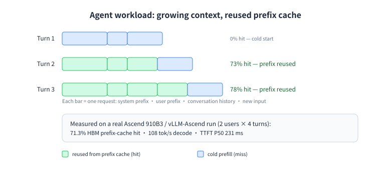
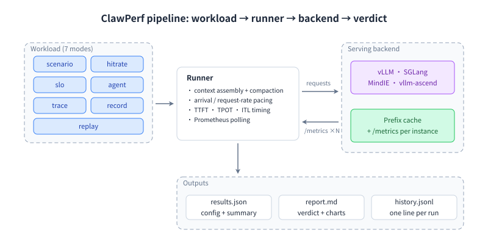

Benchmark LLM serving under real agent workloads — multi-turn, long-context, prefix-cache-heavy traffic. Seven modes, one CLI, built on EvalScope.
面向 真实 Agent 负载的 LLM 推理服务性能基准 —— 多轮对话、长上下文、前缀缓存密集的流量。七种模式，一个 CLI，构建在 EvalScope 之上。
A coding agent does not send one prompt. It grows a conversation, reuses a shared prefix every turn, calls tools, and runs many sessions at once. ClawPerf models exactly that.
编码 Agent 不会只发一次请求：它让上下文不断增长、每轮复用同一段前缀、调用工具，并且多个会话并发。ClawPerf 正是对这些行为建模。
N concurrent users keep independent conversations; every turn appends to history, and compaction kicks in when the window is reached. TTFT is measured as context grows from 7K to 100K+ tokens.
N 个并发用户各自维护独立会话；每轮追加历史，触及窗口上限时触发压缩。TTFT 在上下文从 7K 增长到 100K+ token 的过程中被持续测量。
Hit rate is read from the backend's Prometheus counters (prefix_cache_hits/queries) as a start/end delta — with a controlled test that verifies a target hit rate against the measured one.
命中率取自后端 Prometheus 计数器（prefix_cache_hits/queries）的起止差值；并提供受控测试，把目标命中率与实测值对照验证。
In agent mode the model actually calls functions — read/write files, run shell commands — through OpenAI function calling across a growing context.
agent 模式下模型真的通过 OpenAI function calling 调用工具 —— 读写文件、执行 shell —— 上下文随之增长。
Sweep concurrency against SLOs, drive traffic open-loop at R req/s, and aggregate metrics from every prefill/decode instance of a disaggregated deployment.
按 SLO 扫描并发、以 R req/s 开环施压、并把 PD 分离部署中每个 prefill/decode 实例的指标聚合起来。

Pick the question you need answered; each mode writes a JSON result plus a Markdown report with a verdict.
按你要回答的问题选模式；每种模式都会产出 JSON 结果与带结论的 Markdown 报告。
| Mode模式 | Question it answers回答什么问题 |
|---|---|
scenario | How does the stack behave under N concurrent growing conversations? (default mode)N 个并发增长会话下，服务表现如何？（默认模式） |
hitrate | Does the prefix cache actually deliver the hit rate I designed for?前缀缓存真的达到了我设计的目标命中率吗？ |
slo | What is the maximum concurrency that still meets my latency budget?满足时延预算的最大并发是多少？ |
agent | What does a real tool-calling agent cost in latency and tokens?真实工具调用 Agent 的时延与 token 成本是多少？ |
trace | How much reuse does my real session data contain, and what does it cost to replay?真实会话数据里有多少可复用前缀？回放它代价多大？ |
record | Capture a live agent session (OpenAI or Anthropic clients) as replayable JSONL.把线上 Agent 会话（OpenAI 或 Anthropic 客户端）录成可回放的 JSONL。 |
replay | Replay that recording against any endpoint, with live history so prefixes stay aligned.把录制回放到任意端点，live 历史保证前缀对齐。 |
report · compare · trace-convert | Regenerate a report, diff two runs side by side, convert external trace datasets.重生成报告、两个结果对比、外部 trace 数据集转换。 |
From the end-to-end run in docs/E2E_TEST_REPORT.md: vLLM-Ascend v0.23.0, Qwen3-0.6B, one Ascend 910B3, driven from a Windows client.
数据来自 docs/E2E_TEST_REPORT.md 的端到端测试：vLLM-Ascend v0.23.0 + Qwen3-0.6B，单张昇腾 910B3，客户端为 Windows。
49.90% measured against a 50.00% target — 40 requests, 2 distinct prefixes, concurrency 4, cache reset first.
目标 50.00%，实测 49.90% —— 40 个请求、2 个不同前缀、并发 4，先重置缓存。
90.42% prefix-reuse ceiling over 34 real Claude Code requests (3 sessions); replay of the fitting requests succeeded 29/29.
34 个真实 Claude Code 请求（3 个会话）的复用上限 90.42%；可容纳的请求回放 29/29 成功。
5 users sustained with ttft.p99≤1500ms, tpot.avg≤30ms, e2e.max≤20s — the binding constraint was end-to-end max, which TTFT alone would have missed.
在 ttft.p99≤1500ms、tpot.avg≤30ms、e2e.max≤20s 下可稳定支撑 5 个用户 —— 真正的约束是端到端最大值，只看 TTFT 会误判。
130/130 turns succeeded across the whole suite, with no errors at 8 concurrent sessions.
整套 suite 130/130 轮全部成功，8 并发会话下零错误。
Two vLLM instances behind a round-robin proxy, one benchmark run, metrics aggregated per instance:
两个 vLLM 实例 + 轮询代理，一次压测、按实例聚合指标：
| Engine | Query tokens | Hit tokens | Hit rate |
|---|---|---|---|
engine prefill:0 | 41,427 | 27,520 | 66.43% |
engine decode:0 | 40,287 | 26,752 | 66.40% |
| TOTAL | 81,714 | 54,272 | 66.42% |
Round-robin across two instances with independent caches cost only a duplicate cold fill (47.41% vs a 50% target) — prefix caches are content-addressed and fill lazily.
两个实例各自缓存、轮询路由只多付一次冷启动代价（目标 50%、实测 47.41%）—— 前缀缓存按内容寻址、按需填充。

Everything below assumes a running OpenAI-compatible endpoint. No GPU? Start the bundled mock server and try the whole flow.
以下都假设已有一个 OpenAI 兼容端点。没有 GPU？用内置 mock server 就能跑通全流程。
# core (scenario / hitrate / slo / trace)
pip install clawperf
# extras as needed
pip install "clawperf[agent,record,replay,mock-server]"docker pull ghcr.io/ucm-system/clawperf:latest
docker run --rm --net=host \
-v "$PWD/results:/app/results" \
ghcr.io/ucm-system/clawperf:latest \
--mode hitrate --endpoint http://127.0.0.1:8000/v1 \
--model qwen3 --num-requests 40 --hit-rate 0.5 \
--output /app/results/hitrate.jsonEach release attaches per-architecture image tarballs next to the wheel and sdist.
每个发行版都会附上按架构打包的镜像包，以及 wheel 与源码包。
gunzip -c clawperf-0.6.0-linux-arm64.tar.gz | docker load # or -linux-amd64
sha256sum -c SHA256SUMS# multi-turn long-context workload, with Prometheus metrics
clawperf --mode scenario \
--endpoint http://localhost:8000/v1 --model qwen3 \
--context-profile fresh --num-users 4 --max-turns 10 \
--metrics-endpoint http://localhost:8000/metrics \
--output results.json
Verdict: GOOD · prefix-cache hit 71.3% · TTFT P50 231 ms · 108 tok/sResults land in results.json plus a Markdown report with a verdict and auto-generated findings.
结果写入 results.json，同时生成带结论与自动发现要点的 Markdown 报告。
Three pacing knobs that are easy to confuse, and two that change what a number means.
三个容易混淆的施压旋钮，以及两个会改变指标含义的选项。
| Knob旋钮 | What it controls控制什么 |
|---|---|
--user-arrival | When each session joins: burst, steady:<s> or poisson:<λ>.每个会话何时加入：burst、steady:<秒>、poisson:<λ>。 |
--concurrency | Closed loop: at most N requests in flight; the backend throttles the load itself.闭环：最多 N 个在途请求；负载节奏由服务端决定。 |
--request-rate | Open loop: release requests at R req/s (Poisson) regardless of completions — this one can overload a server.开环：按 R req/s（泊松）发请求，与是否完成无关 —— 只有它会真正压垮服务端。 |
--slo | Composable targets: any of ttft/tpot/e2e × avg/P50/P90/P99/max, e.g. --slo e2e.max<=20s.可组合目标：ttft/tpot/e2e × avg/P50/P90/P99/max，例如 --slo e2e.max<=20s。 |
--metrics-endpoint | Repeatable: aggregate one Prometheus endpoint per instance (prefill=…, decode=…) into a single fleet-wide view.可重复指定：把每个实例的 Prometheus 端点（prefill=…、decode=…）聚合成全局视图。 |
--model-context-length | Clamp trace-replay output length to the window; requests that cannot fit are skipped with a clear reason.把 trace 回放的输出长度裁剪到窗口内；放不下的请求会带明确原因跳过。 |
Named sizes so you do not have to invent token counts, from fresh (7K) to xxl (392K). Suites run several (users × profile) combinations in sequence.
预设规模，免去自己拼 token 数：从 fresh（7K）到 xxl（392K）。suite 会按 (用户数 × 档位) 依次跑多组场景。
fresh 7Kshort 22Kmedium 43Klong 75Kfull 105Kxl 205Kxxl 392K
suite quicksuite standardsuite fullsuite hitrate
vLLM, SGLang, MindIE and vllm-ascend. Metrics mapping is per backend, and multi-engine / multi-instance counters are handled.
vLLM、SGLang、MindIE、vllm-ascend。指标映射按后端区分，并支持多引擎 / 多实例计数器。
trace-convert reads Claude Code sessions, ShareGPT/Hermes conversations and OpenAI message exports; UTF-8 BOM files are fine.
trace-convert 支持 Claude Code 会话、ShareGPT/Hermes 对话、OpenAI messages 导出；带 BOM 的文件也能读。
clawperf-mock-server is a fake endpoint with a trie prefix cache and vLLM-style /metrics — CI verifies hit-rate targets end to end against it.
clawperf-mock-server 提供带字典树前缀缓存与 vLLM 风格 /metrics 的假端点 —— CI 会用它端到端验证命中率目标。
0 ok · 1 config error · 2 all requests failed · 3 interrupted. Configuration mistakes print one actionable line instead of a traceback.
0 正常 · 1 配置错误 · 2 全部请求失败 · 3 被中断。配置错误只打印一行可行动的提示，而不是堆栈。
Tagging vX.Y.Z builds the wheel, sdist, and native amd64/arm64 images, pushes to ghcr.io and attaches offline tarballs to the release.
打 vX.Y.Z tag 即自动构建 wheel、源码包与原生 amd64/arm64 镜像，推送到 ghcr.io 并把离线镜像包附到 Release。
Apache-2.0. Built on EvalScope's perf infrastructure, adding the agent workload model, trace tooling and reporting.
Apache-2.0。构建在 EvalScope 的 perf 基础设施之上，补充了 Agent 负载模型、trace 工具与报告能力。